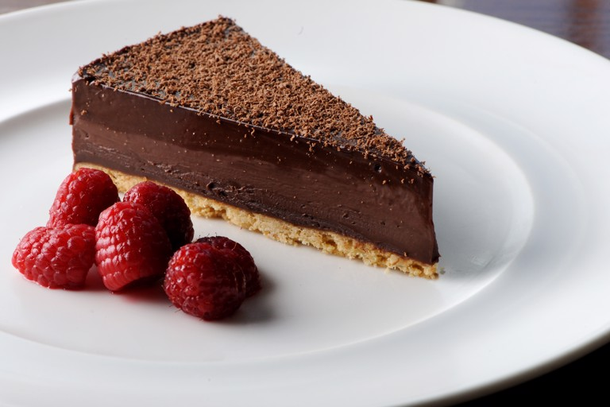

Chocolate Tart

Description
Yummi chocolate tarte easy to make, ready in 30 minutes.
Ingredients:
Tarte base:
- 155gr of butter, plus a little more fore for greasing the tart tin
- 100gr of icing sugar
- 75gr of hazelnuts, finely choped
- 200gr of flour
- 1 beaten egg
- 1/4 tsp salt
- 1 1/2 tsp oragen zest
The filling:
- 365gr of 70% dark chococolate pistoles
- 390ml of whipping cream
- 25gr of trimoline
- 85gr of butter
Steps to make this:
- Start by making the tart base. Cream the butter and icing sugar together, then add the flour, hazelnuts, salt and zest.
Add the beaten egg and slowly mix together until it forms a dough. Lightly need to form a ball, wrap in cling film and rest for 1 hour in the fridge before use.
- Preheat the oven to 170°C. Remove the pastry dough from the fridge and roll it out onto a flat work surface to a thickness of 5mm.
Use a 23cm loose bottomed tart tin and line with great proof paper. Next, carefully line the tin with the rolled pastry.
- Brush the tart base with the egg wash and blind bake until the tart is golden brown, about 15-20 minutes.
Allow to cool while you make the cholote filling.
- For the filling, place the chocolate pistoles in a large mixing bowl. In a pan, heat the trimoline with the cream until hot, being careful not to boil.
Once hot, pour it over the chocolate pistoles and stir until the chocolate has melted. Once the chocolate has melted, add butter and continue to strir untill fully melted.
- Spoon a little chocolate filling around the edges of the tart base to fill in any holes.
Allow this chocolate to set in the fridge, then pour in the rest of the chocolate mix to fill the ring.
- Place the chocolate tart to set in the fridge for at least 4 hours, or ideally overnight.
To serve, use a hot knife to cut the tart into slices.